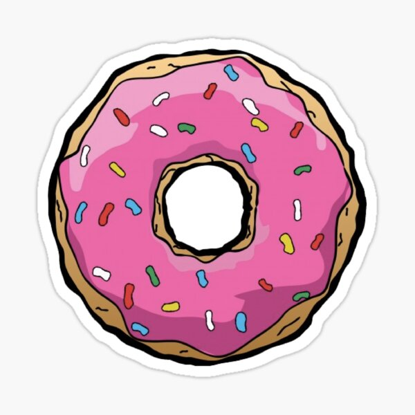

Homer's Favorite

For those who love D'oh-y goodness
Who wouldn't want the most mouthwatering cartoon treat in TV history?
Ingredients
Directions
- Knead D'oh into a circle
- Bake D'oh for 20 minutes at 420 degrees
- Remove from oven and let cool for 10 minutes
- Slather frosting on D'oh
- Sprinkle liberally